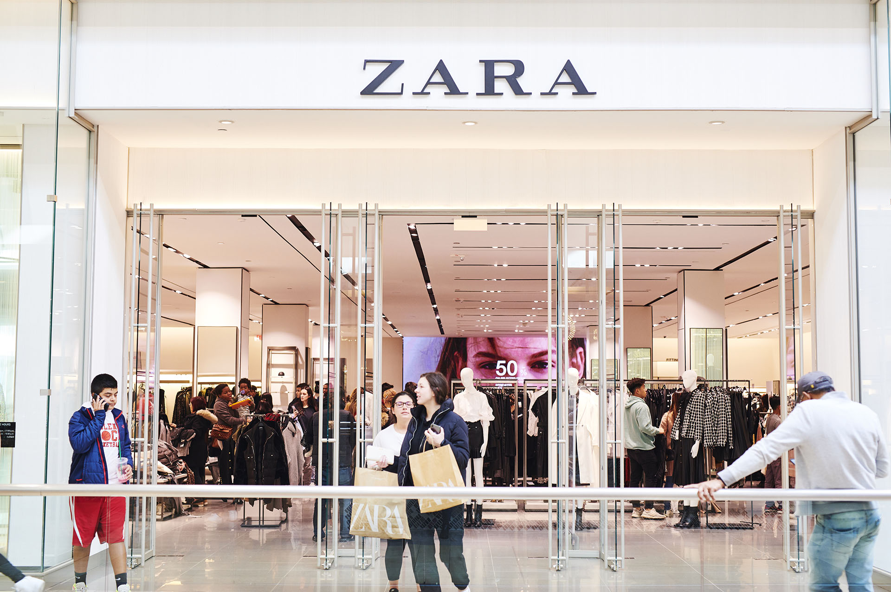
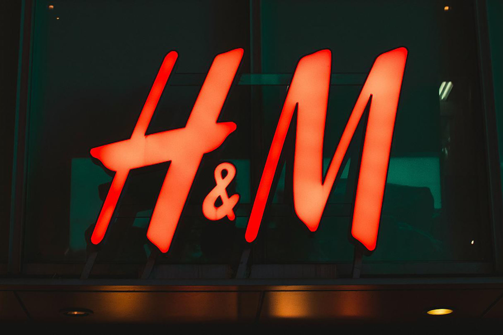
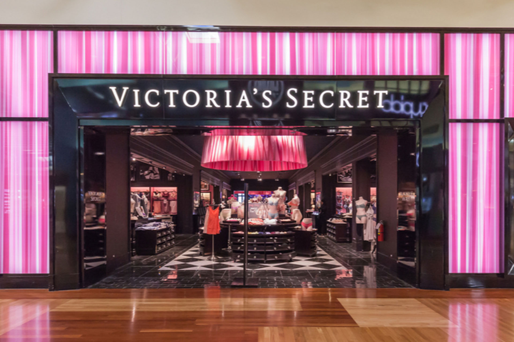
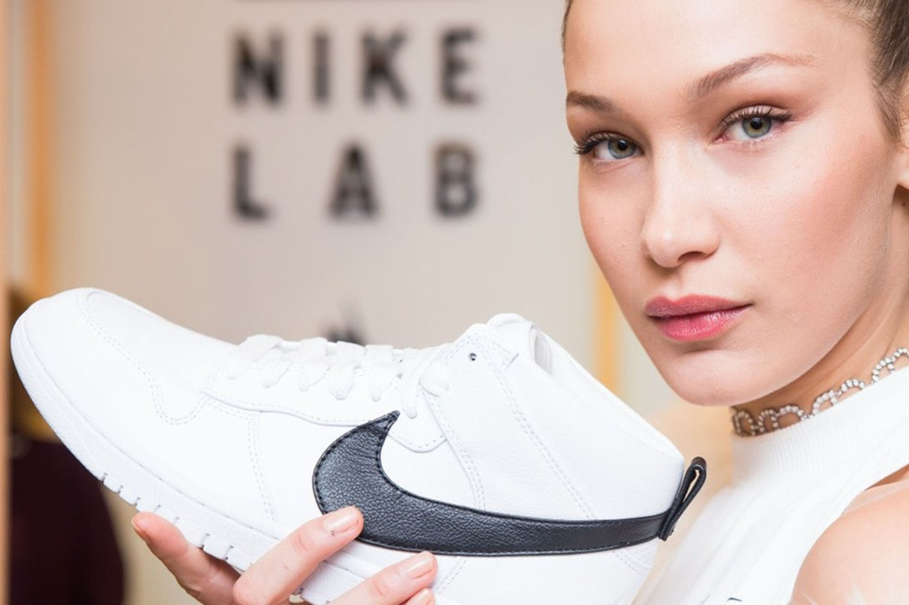

Clothes
Sunt pasionată de modă eco, adică îmi place sa urmăresc industria fashion și să cunosc fatul că fast fashion ocupă locul al doilea la poluare. Din această cauză, prefer să aleg hainele și încălțămintea de înaltă calitate. Acestea arată bine chiar dupa o folosire îndelungată.
Iată cum poți lupta împotriva poluării :
- Cumpără mai puțin, mai responsabil și poartă mai mult
- Upcycle
- Schimb de haine
- Repară, nu înlocui

Eco-moda: 5 branduri «pentru» produse organice !
- 1. ZARA -În 2008 conducerea companiei Zara tot se uita în direcția materialelor organice, creând produse ecologice la 100%, 
- 2. LEVI’S-Levi's primul din faimoasele branduri din lume a lansat linia de eco-denim, care
include
cele mai populare modele de blugi pentru bărbați și femei .Levi's a extins gama liniei ecologice
prin includerea modelelor Waterless, pentru a utiliza mai puțină apă la toate etapele de
producție a blugilor, precum și pentru a promova economisirea apei în viața zilnică.

- 3. H&M-Brandul suedez a fost, probabil, primul în segmentul de piață de masă care a început să utilizeze bumbacul. După ce compania a intrat în Organic Exchange, o organizație de caritate care sprijină utilizarea textilelor ecologice, cei de la H & M au preluat promovarea materiei organice nu numai pentru copii, ci și pentru adulți 
- 4. VICTORIA’S SECRET- Marca de lenjerie intimă a lansat o mini-colecţie de îmbrăcăminte ecologice din lână și bumbac organic, și mai târziu o linie vegană de produse cosmetice Pink Body. 
- 5.NIKE-Nike are un program de Reuse-A-Shoe, care implică prelucrarea încălțămintei sport în centrele specializate din întreaga lume. Acesta a prezentat așa-numitul Considered Design - o linie de produse fabricate cu un impact minim asupra mediului înconjurător, fără materiale toxice. 